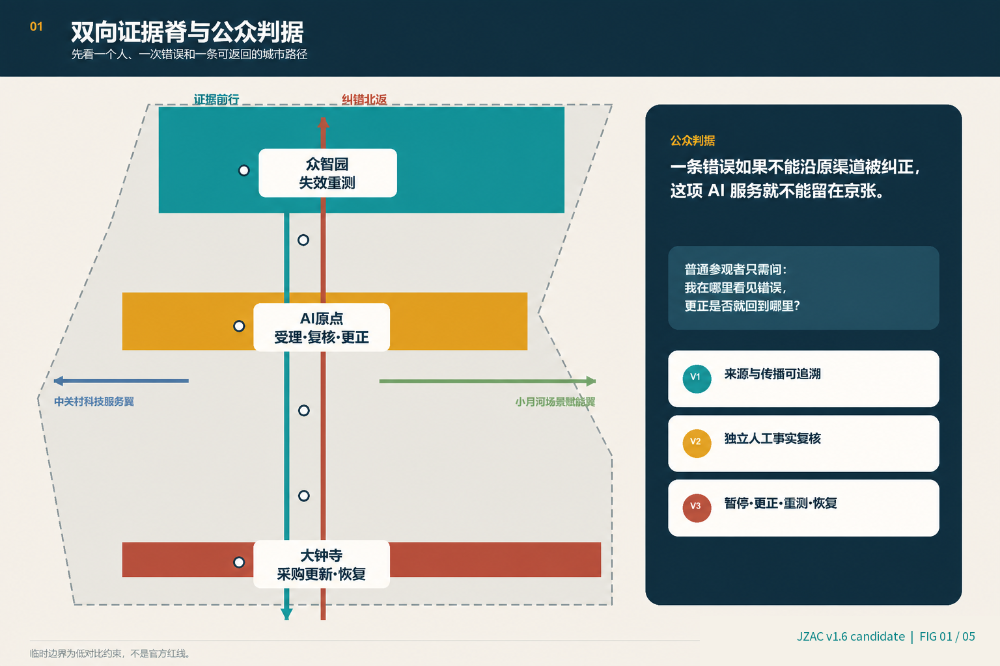
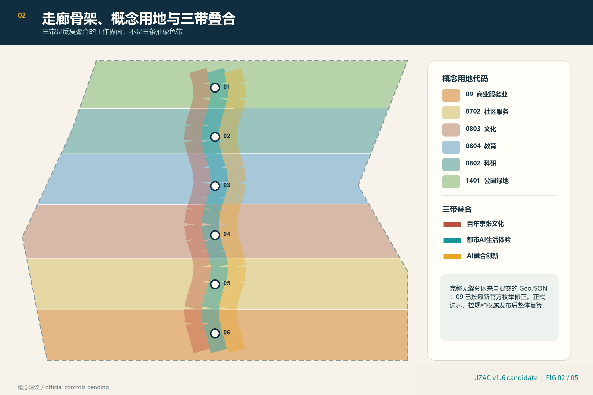
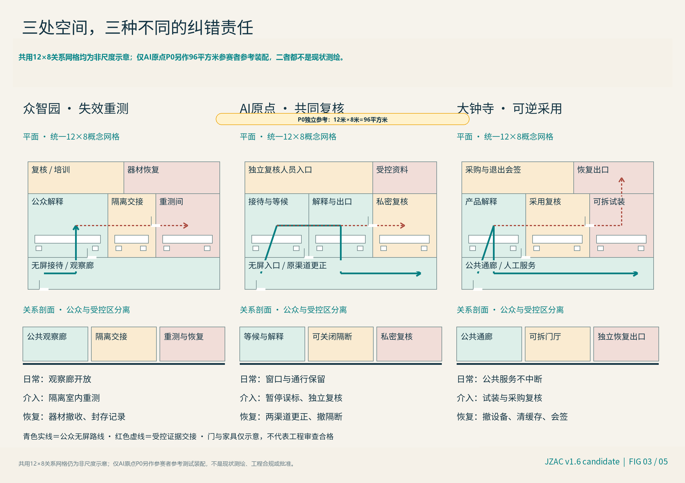
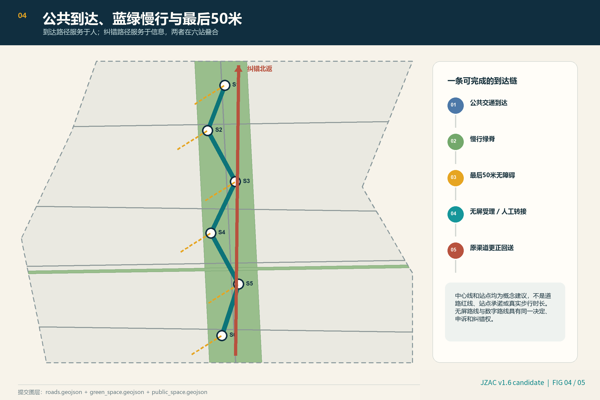
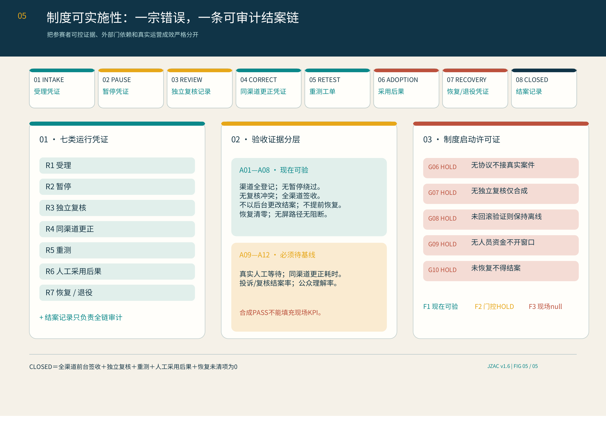

公众判据
一条错误如果不能沿原渠道被纠正，
这项 AI 服务就不能留在京张。
这项 AI 服务就不能留在京张。
一个普通参观者
我在哪里看见错误，
更正是否就回到哪里？
无需先理解模型参数；只检查能否暂停、复核、原路更正并减少后续影响。
我在哪里看见错误，
更正是否就回到哪里？
无需先理解模型参数；只检查能否暂停、复核、原路更正并减少后续影响。
来源能追到、事实有人核、错误真正改掉。任一层缺失，服务保持暂停或退役。
来源 · 版本 · 用途 · 到期 · 全部渠道
来源有效 ≠ 事实真实领域证据 · 复核角色 · 异议 · 不确定
检测器输出 ≠ 人的事实判断暂停 · 同渠道更正 · 重测 · 采购更新 · 恢复/退役
只改后台 ≠ 完成纠错v1.6不追加新概念；它把原有三区接力转成可审计的责任链。每个状态都绑定责任人、凭证、空间、外部门、进入与退出条件。
禁止：跳过PAUSE、后台-only修改、利益冲突复核、重测前恢复、模型决定采用、带未清恢复项结案。
96平方米只作为制度的最小物理载体，不是方案本体。主方案不缩水；外部门失败时只降低运行强度，不降低公众纠错权。
不是实测房间、场地定位或合规结论；原12×8邻接图仍为非米制。
| 主方案 | 受限运行态 | 保留 / 禁止 |
|---|---|---|
| 固定共同复核单元 | 移动受理台＋预约私密房 | 保留无屏、复核、回执；不宣称永久建成 |
| 三区现场接力 | 单站离线桌面接力 | 保留八状态与恢复；不报告现场绩效 |
| 机器渠道接入 | 人工逐渠道签收 | 保留责任和版本；不宣称自动即时 |
| 限域联网服务 | 离线合成证据包 | 保留公众解释和闭锁；不接个人材料 |
待审执行附件：八状态责任链、七类凭证、P0参考载体、区域交接、渠道回执、数据规则、十道外部门与现场启动条件。本版为概念建议；采用临时边界；工程条件与KPI待授权实测。
空间结构重新成为主角：真实提交几何做低对比底图，概念干预做高对比叠加。





明确标注的合成测试材料，不是真实事故，也不声称现场绩效。点击任一故障注入，系统必须转为暂停或退役。
不再新增案例、人物、场景或页数；完整内容留在正文、JSON、图纸后页和审查索引。
以下法定栏目在本页均有可见入口；完整证据位于对应图件、正文和结构化文件。
本附件为待审协议草案。全部角色待任命，签字为空；合成演练可离线复现，现场服务尚未授权。
待任命 / 未签署
待任命 / 未签署
待任命 / 未签署
待任命 / 未签署
待任命 / 未签署
| 要素 | 交接角色 | 交付与限制 |
|---|---|---|
| 数据 | 资料保管角色→众智园 | 许可、样本版本、用途→最小测试包；撤回即停用样本 |
| 算力环境 | 隔离环境运维角色→评测角色 | 环境版本、隔离配置→可复现运行日志；日志缺失不采用 |
| 模型工具 | 候选研发角色→众智园 | 版本、限制、导出能力→失败档案；版本变化重测 |
| 独立评测 | 领域复核角色→原点 | 证据与异议→有期限复核意见；利益冲突需回避 |
| 场景与空间 | 原点/场地角色→大钟寺 | 服务与无屏走查→适配及恢复清单；不宣称工程可行 |
| 人才与企业服务 | 科技服务翼候选角色→采用角色 | 培训、交接、资源依据→交接单及成本结构；无资金承诺 |
待任命 / 未签署
| 状态 | 最终负责A / 执行R | 所需凭证 | 禁止跳转 |
|---|---|---|---|
| INTAKE 受理 | 试点负责人 / 案件受理人 | 案件号、责任人、完整原渠道清单 | 无责任人或渠道清单不得进入暂停 |
| PAUSE 暂停 | 原渠道责任人 / 案件受理人 | 逐原渠道暂停凭证 | 任一渠道未暂停不得进入复核 |
| REVIEW 复核 | 独立领域复核人 / 独立领域复核人 | 依据、异议、利益冲突、结论/不确定和有效期 | 发布者、供应商、材料作者或渠道责任人不得自审 |
| CORRECT 更正 | 原渠道责任人 / 案件受理人 | 逐渠道旧版、新版、前台可见更正和签收 | 后台-only修改或漏一渠道不得重测 |
| RETEST 重测 | 重测负责人 / 重测负责人 | 可复现失效样例、复测结果和恢复建议 | 重测负责人不得自行恢复发布 |
| ADOPTION 采用后果 | 采用/停用责任人 / 试点负责人 | 人工采用/修改/退役决定及受影响采购项 | 模型输出不得替代人类决定 |
| RECOVERY 恢复 | 采用/停用责任人 / 数据保管人 | 资产、材料、缓存、备份、设备和空间逐项记录 | 任何未清项目都不得进入结案 |
| CLOSED 结案 | 试点负责人 / 案件受理人 | 链接七类运行凭证的结案记录 | 只允许CLOSED_SYNTHETIC_ONLY，不授权真实服务 |
职责分离是容量约束：渠道所有权、独立复核、重测与采用后果不得因排队压力合并到一个人。复核人缺席或结论无法确定时保持暂停并提供人工说明，不自动生成不利结论。
更正覆盖全部已登记原渠道并逐一签收才完成；只改后台、漏发或未签收均保持暂停。渠道清单与签收数不能互相代替。
原渠道责任人
| 字段 | 填写值 |
|---|---|
| version_before | 留空——仅在授权现场工作中填写 |
| version_after | 留空——仅在授权现场工作中填写 |
| paused_at | 留空——仅在授权现场工作中填写 |
| corrected_at | 留空——仅在授权现场工作中填写 |
| acknowledged_by | 留空——仅在授权现场工作中填写 |
| evidence_ref | 留空——仅在授权现场工作中填写 |
原渠道责任人
| 字段 | 填写值 |
|---|---|
| version_before | 留空——仅在授权现场工作中填写 |
| version_after | 留空——仅在授权现场工作中填写 |
| paused_at | 留空——仅在授权现场工作中填写 |
| corrected_at | 留空——仅在授权现场工作中填写 |
| acknowledged_by | 留空——仅在授权现场工作中填写 |
| evidence_ref | 留空——仅在授权现场工作中填写 |
仅支持遗产内容误标的受理、复核、更正和恢复；当前只用合成材料。
不收集人脸、身份证号、健康记录、跨场景画像；联系方式如现场确需使用，须另行授权、隔离保存并提供无联系方式办理路线。
逐项评估错误标签的声誉影响、过度公开、二次传播、复核冲突、拒绝服务和无屏排斥；每项记录控制、剩余风险、责任人和是否可接受。未通过则不开放真实渠道。
最小字段：case_id; claim_version; source_ref; permission_ref; channel_ids; reviewer_role; conflict_check; review_basis; decision_or_uncertainty; pause_and_correction_events; retest_ref; recovery_ref; expiry
| 影响 | 控制措施 | 剩余风险 / 责任 |
|---|---|---|
| 声誉伤害 | 不利标签暂停；事实、检测及来源分栏；提供申诉 | 已传播的印象不能保证完全消除 / 独立领域复核人 |
| 过度公开与二次传播 | 公开回执去标识；原件受限；逐渠道更正及撤回通知 | 外部截图或转述仍需人工后续处理 / 数据保管人 |
| 利益冲突 | 发布者与供应商回避；无独立复核不得继续 | 合格独立人员尚待任命 / 独立领域复核人 |
| 数字排斥 | 无账户无手机受理、纸面回执、辅助沟通共测 | 场地与实际用户尚待测试 / 无障碍共测负责人 |
| 误删或过度留存 | 分类保留、受限保全例外、备份清理台账及复核日期 | 备份未关闭时不能宣称完全删除 / 数据保管人 |
按原件、派生副本、缓存、导出和备份逐项清理或隔离。备份尚未清除不得写“全部删除”；记录计划到期及恢复时再删除要求。保全例外必须记录依据、批准人、复核日及访问限制。
待任命 / 未签署
经同意自愿参与，可随时停止；不要求披露诊断，不默认录音录像；退出不影响服务。
无手机完成受理和纸面回执；低视力读出状态及限制；轮椅路线从入口到私密复核和离开；通过易读或辅助沟通解释“来源有效≠事实真实”。
同一决定、申诉及更正权利；发现核心任务无法完成即修改后重测。此为共测计划，不是建筑无障碍合规认证。
| 记录字段 | 填写值 |
|---|---|
| task_id | 留空——仅在授权现场工作中填写 |
| communication_mode | 留空——仅在授权现场工作中填写 |
| consent_record | 留空——仅在授权现场工作中填写 |
| completed_without_phone | 留空——仅在授权现场工作中填写 |
| assistance_requested | 留空——仅在授权现场工作中填写 |
| barrier | 留空——仅在授权现场工作中填写 |
| revision | 留空——仅在授权现场工作中填写 |
| retest_result | 留空——仅在授权现场工作中填写 |
基线、现场目标和实测结果均待确认；必须记录失败与未结案。
| 指标 | 起止事件与分母 | 采集角色 |
|---|---|---|
| 人工接管 | request_at → human_accept_at；失败和未接管单列 | 案件受理人 |
| 同渠道更正 | 人工更正决定→最后一个原渠道签收；分母为全部登记原渠道 | 原渠道责任人 |
| 无屏等价完成 | 按沟通方式分别报告完成/尝试数、退出及所需协助；不删失败样本 | 无障碍共测负责人 |
| 申诉处理 | 已决定申诉中改判数/已决定申诉数；未结案另列 | 独立领域复核人 |
| 理解度 | 能解释来源不等于真相的人数/同意回答人数；注明未答 | 无障碍共测负责人 |
| 恢复完成 | 有证据关闭项/全部应恢复项；备份与场地分开 | 数据保管人 |
采用须完成授权、复核、全部渠道更正、重测及恢复并签字；可修复问题选修改并保持暂停；不可恢复或授权撤销选退役。草案空签字不阻断提案讨论，但禁止现场采用。
| 角色 | 签署人 / 日期 / 证据 |
|---|---|
| 场地主体 | 留空——仅在授权现场工作中填写 |
| 采用/停用责任人 | 留空——仅在授权现场工作中填写 |
| 独立领域复核人 | 留空——仅在授权现场工作中填写 |
维持S/M/L档位。成本结构为人员工时×有依据单价＋适配工程量×单价＋设备＋独立复核＋无障碍共测＋恢复与运维；数量、单价、总额均待确认，不据此承诺投资。
before_any_live_pilot · host_operator
确认实名运营主体、场地许可、人员时段及经审查的数据规则；否则只保留合成演练
当前不阻断提案讨论；触发后必须完成，不能提前宣称取得。
official_geometry_and_controls_released · planning_team
九个GeoJSON、指标、五组图、HTML及PDF联动复算，记录来源版本、公式和差异
当前不阻断提案讨论；触发后必须完成，不能提前宣称取得。
before_physical_adaptation · host_operator
取得权属、建筑、结构、消防、无障碍与工程数量及成本依据
当前不阻断提案讨论；触发后必须完成，不能提前宣称取得。
单次60分钟合成演练；现场时段待场地确认
案件受理人, 原渠道责任人
无屏受理台、等候及纸面回执位
纸面案件卡、可替换展签、离线网页终端；不采集身份材料
T+20至T+60为合成脚本时刻，非真实服务承诺
独立领域复核人, 重测负责人, 数据保管人, 采用/停用责任人
私密复核、受控重测、退出与恢复位
许可材料清单、版本日志、隔离存储、恢复检查表
| 要求 | 证据位置 | 状态 / 责任 |
|---|---|---|
| 字体与素材 | sources.json; report/copyright_statement.md; visual/assets/font-coverage.json | 包内来源与许可可核对；不认证其他未提供材料 / 试点负责人 |
| 数据最小化与期限 | execution-contract.json#data_protocol | 已有草案，未获现场专业批准 / 数据保管人 |
| 独立复核 | execution-contract.json#independence | 回避规则可审查；具体人员待任命 / 独立领域复核人 |
| 无障碍与场地 | execution-contract.json#accessibility | 共测任务及记录表已设计；现场未测 / 场地主体 |
| 授权与采用 | execution-contract.json#disposition | 签字空白，禁止现场采用；不阻断提案讨论 / 采用/停用责任人 |
不设真相总分，不建自动黑名单，不声称政府认证，不拥有删帖权。临时边界不是官方红线；容积率、高度、密度、法定绿地率与真实运营KPI待正式资料或授权试点。离线运行，无CDN、远程地图、表单、跟踪器或网络请求。